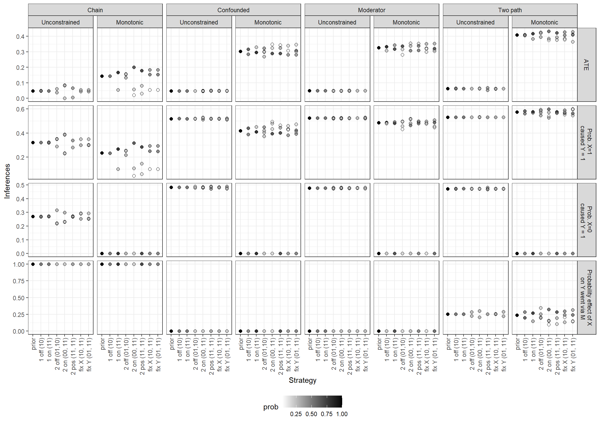
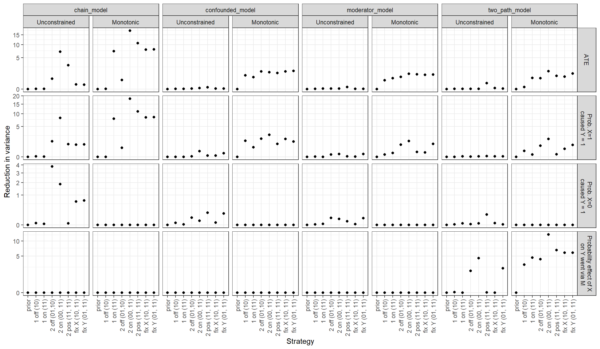

| \(\lambda^K_1\) | K | X | Y | \(\Pr(X, Y, K | \lambda^K_1)\) | \(\Pr(X, Y| \lambda^K_1)\) | \(\Pr(K| X, Y, \lambda^K_1)\) |
|---|---|---|---|---|---|---|
| 0.33 | 0 | 1 | 0 | 0.17 | 0.18 | 0.91 |
| 0.67 | 0 | 1 | 0 | 0.08 | 0.12 | 0.71 |
| 0.33 | 1 | 1 | 0 | 0.02 | 0.18 | 0.09 |
| 0.67 | 1 | 1 | 0 | 0.03 | 0.12 | 0.29 |
| 0.33 | 0 | 1 | 1 | 0.17 | 0.32 | 0.53 |
| 0.67 | 0 | 1 | 1 | 0.08 | 0.38 | 0.22 |
| 0.33 | 1 | 1 | 1 | 0.15 | 0.32 | 0.47 |
| 0.67 | 1 | 1 | 1 | 0.30 | 0.38 | 0.78 |
13 Case Selection
Chapter summary
We show how to use causal models to inform the selection of cases for intensive analysis. We outline a procedure in which we predict the inferences that will be made when future data are found and use these predictions to inform case-selection strategies. We ask: Given a set of cases on which we already have data on \(X\) and \(Y\), which of these cases will it be most advantageous to choose for more in-depth investigation? We show that the optimal case-selection strategy depends jointly on the model we start with and the causal question we seek to answer, and we draw out the implication that researchers should be wary of generic case-selection principles.
Very often, researchers start out with access to \(X\), \(Y\) data on many cases and then want to select a subset of cases—case studies—to examine more carefully in order to draw stronger conclusions either about general processes or about likely effects in specific cases. A key design decision is to determine which cases are most likely to be informative about the question at hand. This chapter shows how we can use a causal-model-based approach to inform this key research-design decision.
13.1 Common Case-Selection Strategies
A host of different strategies have been proposed for selecting cases for in-depth study based on the observed values of \(X\) and \(Y\) data. Perhaps the most common strategy is to select cases in which \(X=1\) and \(Y=1\) and look to see whether in fact \(X\) caused \(Y\) in the chosen cases, using some approach to inferring causality from within-case evidence. But many other selection strategies have been proposed, including strategies to select cases “on the regression line” or, for some purposes, cases “off the regression line” (e.g., Lieberman (2005)). Some scholars suggest ensuring variation in \(X\) (most prominently, King, Keohane, and Verba (1994)), while others have proposed various kinds of matching principles. Still, others have pointed to the advantages of a random sampling of cases, either stratified or unstratified by values on \(X\) or \(Y\) (Fearon and Laitin (2008), Herron and Quinn (2016)).
One reason why case-selection strategies might differ is that we might be using the case studies in quite different ways.
A matching strategy, for instance—selecting cases that are comparable on many features but that differ on \(X\)—can replicate on a small scale the kind of inference done by matching estimators with large-\(n\) data. Such a strategy can draw leverage from \(X,Y\) variation even if researchers have matched on other within-case characteristics.
Other strategies seek to use qualitative information to check assumptions made in cross-case \(X, Y\) analysis: For example, is the measurement of \(X\) and \(Y\) reliable in critical cases?
For addressing such questions, given limited resources, it might make sense to focus on cases for which validation plausibly makes a difference to the \(X,Y\) inferences: For example, we might focus on influential cases that have unusually extreme values on \(X\) and \(Y\). Similar arguments are made for checking assumptions on selection processes, though we consider this a more complex desideratum since this requires making case-level causal inferences and not simply measurement claims (Dunning 2012). Seawright (2016) advocates for selecting extreme and deviant cases for purposes such as the discovery of measurement error or omitted variables that might have consequences for inferences drawn from cross-case \(X,Y\) correlations.
A third purpose is to use a case to generate alternative or richer theories of causal processes, as in Lieberman’s “model-building” mode of “nested analysis” (Lieberman (2005)). Lieberman suggests that cases “off the regression” line will typically be of greatest interest for this purpose. Weller and Barnes (2014) also focus on both \(X,Y\) relations and whether the cases are useful for hypothesis generation.
In what follows, we focus on a simpler and more general way of thinking about the purpose of gathering more detailed evidence on a subset of cases: The richer evidence gathered in our chosen cases will feed directly into model-updating and, in turn, help answer our query. We can thus frame the case-selection task as follows: Given existing \(X, Y\) data for a set of cases and a given clue (or set of clues) that we can go looking for in a more intensive analysis (i.e., process tracing) of some subset of these cases, we want to figure out which cases to select for intensive analysis so that we maximize expected learning about some well specified question of interest.
The basic insight of this chapter is simple enough: The optimal strategy for case selection for a model-based analysis is a function of the model we start with and the query we seek to address, just as we saw for the optimal clue-selection strategy in Chapter 12. This insight yields guidance that is consistent with some common advice but at odds with other advice. But the most general message of this chapter is about the overall approach: That is, have clear goals—know what question you are asking and whether you are posing it at the case level, the population level, or both—think through in advance what you might find in cases you could select for inquiry, think through how what you might find addresses your goals, and then choose accordingly. More specifically, we show how researchers can use a causal model to formalize this analysis: To tell them what types of cases are likely to yield the greatest learning given their model and the query that they seek to answer.
The broad injunction to select cases to maximize learning is in line with the general recommendations of Fairfield and Charman (forthcoming), though the strategy for maximizing learning differs here, particularly in its grounding in a causal model. Most closely related to our analysis in this chapter is the contribution of Herron and Quinn (2016), who build on Seawright and Gerring (2008). While Seawright and Gerring provide a taxonomy of approaches to case selection, they do not provide a general strategy for assessing the relative merits of these different approaches. As we do, Herron and Quinn (2016) focus on a situation with binary \(X,Y\) data and assess the gains from learning about causal type in a set of cases. Interestingly, in their treatment, the causal type, \(Z_i\) is called a confounder rather than being an estimand of direct interest; in our setup, confounding as normally understood arises because of different probabilities of different causal types of being assigned to “treatment,” or an \(X=1\) value).
Our setup differs from that in Herron and Quinn (2016) in a few ways. Herron and Quinn (2016) parameterize differently, though this difference is not important.1 Perhaps the most important difference between our analysis and that in Herron and Quinn (2016) is that we connect the inference strategy to process-tracing approaches. Whereas Herron and Quinn (2016) assume that causal types can be read directly, we assume that these are inferred imperfectly from evidence and we endogenize the informativeness of the evidence to features of the inquiries.^[There are differences in addition to these. Here, we assume that the case-selection decision is made after observing the \(XY\) distribution and we explore a range of different possible contingency tables. In Herron and Quinn (2016), the distribution from which the contingency tables are drawn is fixed, though set to exhibit an expected observed difference in means (though not necessarily a true treatment effect) of 0.2. They assume large \(X,Y\) datasets (with 10,000 units) and case-selection strategies ranging from 1 to 20 cases. Another important difference, is that in many of their analyses, Herron and Quinn (2016) take the perspective of an outside analyst who knows the true treatment effect; they then assess the expected bias generated by a research strategy over the possible data realizations. We, instead, take the perspective of a researcher who has beliefs about the true treatment effect that correspond to their priors, and for whom there is, therefore, no expected bias. Despite these various differences, our results will agree in key ways with those in Herron and Quinn (2016).
13.2 No General Rules
Case selection is about choosing in which cases we will seek further information. We want to look for evidence in cases where that evidence is likely to be most informative. And the informativeness of a case depends, in turn, on our model and our query.
We start in this section by illustrating how simple rules—like choosing cases where \(X=1\) and \(Y=1\) or choosing the cases we most care about—may sometimes lead us astray. Rather, we will argue that there is a general procedure for determining how to select cases, and this procedure requires a specification of the learning we expect to achieve, given different data patterns we might find.
13.2.1 Any Cell Might Do
Although it might be tempting to seek general case-selection rules of the form “examine cases in which \(X=1\) and \(Y=1\)” or “ignore cases in which \(X=0\) and \(Y=1\),” it is easily demonstrated that which cases will be (in expectation) more informative depends on models and queries.
Suppose that we know that processes in some population can be represented by the model \(X \rightarrow Y \leftarrow K\), and, moreover:
- \(\Pr(Y=1|X=0, K = 0) = 1\)
- \(\Pr(Y=1|X=1, K = 0) = .5\)
- \(\Pr(Y=1|X=0, K = 1) = 0\)
- \(\Pr(Y=1|X=1, K = 1) = .9\)
One way to read this set of statements is that \(X\)’s causal effect on \(Y\) varies with \(K\). Say we know that in the population, the share of \(X=1\) cases, \(\lambda^X_1\) is 0.5. But we do not know how common \(K\) is. Nor do we know the joint distribution of \(X\) and \(Y\). Thus, we do not know either the average effect of \(X\) or the probability that \(X\) caused \(Y\) either in the population or for a case with particular \(X, Y\) values. We will let \(\kappa\) denote the unkown quantity \(\Pr(K=1) =\lambda^K_1\).
What do the above statements tell us about \(K\)’s informativeness? The beliefs above imply that if we were given a case with \(X=Y=1\), then \(K\) is a “doubly decisive” clue for assessing whether, in this case, \(X\) causes \(Y\). In particular, we see that for an \(X=Y=1\) case, observing \(K=1\) implies that \(X\) caused \(Y\): This is because, if \(X\) were 0 \(Y\) would have been 0. We also see that \(K=0\) in an \(X=1, Y=1\) case implies that \(X\) did not cause \(Y\) since \(Y\) would have still been 1 even if \(X\) were 0. So an \(X=Y=1\) case would be a highly informative place to go looking for \(K\).
However, if we had a case in which \(X=Y=0\), then learning \(K\) would be entirely uninformative for the case. In particular, we already know that \(K=1\) in this case as the statements above exclude the possibility of a case in which \(X=Y=0\) and \(K=0\). So there would be nothing gained by “looking” to see what \(K\)’s value is in the case.
For the same reason, we can learn nothing from \(K\) in an \(X=0, Y=1\) case since we know that \(K=0\) in such a case.
On the other hand, if we chose an \(X=1, Y=0\) case, then \(K\) would again be doubly decisive, with \(K=0\) implying that \(X=1\) caused \(Y=0\) (because the counterfactual of \(X = 0\) would have resulted in \(Y=1\) when \(K\) is 0), and \(K=1\) implying that \(X=1\) did not cause \(Y=0\) (because the counterfactual of \(X = 0\) would still result in \(Y=0\) since there is zero likelihood that \(Y = 1\) when \(X\) is 0 and \(K\) is 1).
We have chosen extreme values for this illustration—our beliefs could, of course, allow for gradations of informativeness, rather than all-or-nothing identification—but the larger point is that beliefs about the way the world works can have a powerful effect on the kind of case from which learning is possible. And note that in this example, there is nothing special about where a case lies relative to a (notional) regression line: Informativeness in this setup happens to depend on \(X\)’s value entirely. Though again, this is a particular feature of this particular set of beliefs about the world.
There are two further considerations we might take into account when deciding whether to choose an \(X=1, Y=0\) case or an \(X=1, Y=1\) case. In both cases, the clue will be doubly decisive, so we will learn about the case. However, the cases may still differ with respect to:
- How great our prior uncertainty is about the case?
- What we can learn from the case for the population?
Case-Level Prior Uncertainty
Prior uncertainty rin our example reduces to the prior that \(K=1\) in the case. We have: \[\Pr(K=1 | X=Y=1) = \frac{\Pr(K=1, X=1,Y=1)}{\Pr(X=1, Y=1)}\] Making use of the fact that \(Pr(X=x, K=1)= 0.5\kappa\) and \(Pr(X=x, K=0)= 0.5(1-\kappa)\) this can be written:
\[\begin{eqnarray} \Pr(K=1 | X=Y=1)= \frac{\Pr(Y=1|K=1, X=1)\kappa}{\Pr(Y=1|K=1, X=1)\kappa+\Pr(Y=1|K=0, X=1)(1-\kappa)} \end{eqnarray}\]
From what we know about the population, we then have:
\[\Pr(K=1 | X=Y=1) = \frac{0.9\kappa}{0.9\kappa+0.5(1-\kappa)}\]
So if we had a case prior that \(\kappa = .5\) (and so each \(K,X\) combination is equally likely) we would have \(\Pr(K=1 | X=1, Y=1) = \frac{0.9}{0.9 + 0.5} = 0.64\).
For an \(X=1, Y=0\) case, the same calculation would yield \(\Pr(K=1 | X=1, Y=0) = \frac{0.1}{0.5+0.1}=0.17\).
In other words, with these priors, we are more uncertain about the value of \(K\) in the \(X=1, Y=1\) case than in the \(X=1, Y=0\) case and expect to learn more from the first kind of case than from the second.
Population inference
Suppose, now, that we were interested in a population query: the average effect of \(X\) on \(Y\). We can see that this is equal to \(\kappa\times0.9 + (1-\kappa)\times(-0.5)) = 1.4\times \Pr(K=1)-0.5\). For this query, we need only determine the prevalence of \(K=1\) in the population. It might seem that this means that it is irrelevant what type of case we choose: why not use pure random sampling to determine \(K\)’s prevalence? As we saw above, however, we have more information about the likely value of \(K\) in some kinds of cases than in others. Thus, for this population-level estimand as well, selecting an \(X=1\) case will be informative, while selecting an \(X=0\) case will not be informative.
We also expect different inferences in the two kinds of cases for the population share of \(K=1\) cases, \(\lambda^K_1\).
For illustration, say we entertain two equally likely possibilities about \(\lambda^K_1\): either \(\lambda^K_1 = \kappa^H = 2/3\) or \(\lambda^K_1 = \kappa^L = 1/3\). We can request a case with any \(X,Y\) combination to inspect and then draw an inference about \(\lambda^K_1\). Note that since we request a case with particular \(X,Y\) features we do not learn from the values of \(X\) and \(Y\) in the case we examine (except perhaps if we were told that no such case existed). We have, after all, requested a case like this to look at.
Table 13.1 shows the implied probabilities put on different data patterns for the different values of \(\lambda^K_1\) we entertain. For instance, looking at the last row if \(\lambda^K_1 = 0.67\) we expect \(X=1, K=1\) with probability \(0.5\times0.67\) and expect \(Y=1\) with probability \(0.9\), given \(X=1, K=1\), meaning \(\Pr(X=1, K=1, Y=1 | \lambda^K_1 = 0.67) = 0.5\times0.67\times0.9 \approx 0.30\). Quantity \(\Pr(X=1, Y=1 | \lambda^K_1 = 0.67)\) is calculated similarly. The last column is the ratio of these two, which has the same form as Equation 13.1:
\[\Pr(K=1 | X=1, Y=1, \lambda^K_1 = 0.67) = \frac{0.9\lambda^K_1}{0.9\lambda^K_1+0.5(1-\lambda^K_1)} \approx 0.78 \]
We omit the \(X=0\) cases from the table since there is nothing to learn from \(K\) for these and so our beliefs about \(\lambda^K_1\) would in such a case not change given whatever we find.
From this table, we can calculate what we are likely to find and then what we will infer when we find it, in an \(X=1, Y=1\) case:
- \(\Pr(K=1 | X = 1, Y=1)\) = 0.63
- \(\Pr(\lambda^K_1 = \frac23 | X=1, Y=1, K=1)\) = 0.62
- \(\Pr(\lambda^K_1 = \frac23 | X=1, Y=1, K=0)\) = 0.29
We can now calculate the expected posterior variance as 0.224.2 This is an improvement on the prior variance of 0.25.
Similarly, we can calculate:
- \(\Pr(K=1 | X = 1, Y=0)\) = 0.19
- \(\Pr(\lambda^K_1 = \frac23 | X=1, Y=0, K=1)\) = 0.76
- \(\Pr(\lambda^K_1 = \frac23 | X=1, Y=0, K=0)\) = 0.44
Now the expected posterior variance, while still an improvement over the prior, is higher than what we expect if we choose a \(X=1, Y=1\) case, at 0.234.
In summary, under the stipulated beliefs about the world, we can learn most about the population ATE by selecting an \(X=Y=1\) for study. We learn something from an \(X=1, Y=0\) case, and nothing at all from a case with \(X=0\). We can also learn about the case-level effects for cases with \(X=1\) and \(Y=0\). If we are interested in the case level effect for an \(X=0\) case, then there are no gains from any case-selection strategy since we know \(K\)’s value based on \(X\) and \(Y\)’s value.
But here’s the thing. While we have demonstrated specific gains from a \(X=1, Y=1\) case, in this example, there is nothing generally preferable about such a case. Under a different set of beliefs about the world, we would expect to learn more from an \(X=Y=0\) case than from an \(X=Y=1\) case. Suppose, for instance, that we have a model in which:
- \(X \rightarrow Y \leftarrow K\)
- \(\Pr(Y=1|X=0, K = 0) = .5\)
- \(\Pr(Y=1|X=1, K = 0) = 0\)
- \(\Pr(Y=1|X=0, K = 1) = .5\)
- \(\Pr(Y=1|X=1, K = 1) = 1\)
In this world, we learn nothing from observing a case in which \(X=1,Y=1\) since we already know that \(K=1\). In contrast, if \(X=Y=0\), then if we learn that \(K=1\), we know that, were \(X=1\), \(Y\) would have been 1; and if instead, we observe \(K=0\), we know that \(Y\) would have (still) been 0 if \(X\) were 1. Now, \(K\) is doubly decisive for an \(X=Y=0\) case but unhelpful for an \(X=Y=1\) case. Our lessons for case selection get turned on their head with this new background model. We can easily mix things up again to construct a situation in which the off-diagonal cases are the informative ones.
In summary: beware of simple rules for case selection. Depending on the model, our priors, and the query, any type of case can be optimal.
13.2.2 Interest in a Case Might Not Justify Selecting that Case
It seems obvious that if your query of interest is defined at the case level—not at the population level—then the choice of cases is determined trivially by the query. Just study the case you have a question about.
This is not correct, however.
Sometimes we might be interested in effects in case A but still be better off gathering more information about case B instead of digging deeper into case A. We illustrate this phenomenon for a situation in which the learning from cases operates via updating on a general model (and subsequent application of that model to the case of interest) rather than via direct application of a prior, informative general model to the case of interest.
We imagine a world in which we have causal model \(X \rightarrow M \rightarrow Y \leftarrow K\), flat priors on all nodal types, and start with access to data as in Table 13.2:
| Case | X | Y | K | M |
|---|---|---|---|---|
| A | 1 | 1 | 1 | |
| B | 0 | 0 | 1 |
In other words, we start out with data only on clue \(K\) in case \(A\) and only on clue \(M\) in case \(B\). We are interested specifically in whether \(X\) mattered for \(Y\) in case \(A\). We now want to figure out in which case to focus our further data-collection efforts: Are we better off gathering data on \(M\) for case \(A\) or on \(K\) for case \(B\)?
Given the model, we can work out what we might find under each strategy and what we might then infer for our query about \(A\). These potential inferences and the associated (case level) uncertainty are detailed in Table 13.3. Note that the probability of finding \(K=1\) in case \(B\) or \(M=1\) in case \(A\) is calculated after taking account of the data we already have on \(A\) and \(B\).
| Quantity | Best guess | Uncertainty |
|---|---|---|
| Current beliefs on A | 0.257 | 0.191 |
| Probability K = 1 for B | 0.660 | |
| If you find K = 0 for B: | 0.250 | 0.188 |
| If you find K = 1 for B: | 0.262 | 0.193 |
| Probability M = 1 for A | 0.492 | |
| If you find M = 0 for A: | 0.312 | 0.215 |
| If you find M = 1 for A: | 0.201 | 0.161 |
This table then gives us enough to calculate the expected uncertainty under each strategy.
- The baseline uncertainty for case A is 0.191.
- Under a strategy in which we gather data on \(K\) in case B, the expected uncertainty for effects in \(A\) is 0.191 (that is, identical up to rounding errors).
- The expected uncertainty (about effects in \(A\)) from gathering data on \(M\) in case A is 0.188.
These numbers are all very similar—highlighting the difficulty of drawing inferences without a strong prior model based on just two cases. This is one (negative) lesson of this exercise.
Nevertheless, the expected uncertainties do diverge. Intuitively, when we investigate causal effects in case \(B\) we in principle benefit from a Millian logic: finding that the cases are similar on \(K\)—the moderator—makes us think it more likely that variation in \(X\) is explaining outcomes. At least \(K\) is not explaining the outcome. The gain is however quantitatively small. When we investigate case \(A\) we are more likely to be convinced that \(X\) mattered in case \(A\) when we find that differences in \(M\)—the mediator—are in line with differences in \(X\) and \(Y\). \(M\) is the path through which any effect needs to operate and if \(M\) is similar in both cases this knocks confidence that \(X\) was making a difference.
So here to learn about case \(A\), we do well by finding out more about case \(A\), as intuition would suggest.
Suppose, however, that we are interested in making an inference about case \(B\). Now which strategy would be better?
Details of the inferences we would draw about \(X\)’s effect on \(Y\) in case \(B\) for each possible data strategy are given in Table 13.4.
| Quantity | Best guess | Uncertainty |
|---|---|---|
| Current beliefs on B | 0.256 | 0.190 |
| Probability K = 1 for B | 0.660 | |
| If you find K = 0 for B: | 0.251 | 0.188 |
| If you find K = 1 for B: | 0.265 | 0.195 |
| Probability M = 1 for A | 0.492 | |
| If you find M = 0 for A: | 0.312 | 0.215 |
| If you find M = 1 for A: | 0.201 | 0.160 |
This table looks familiar (we explain why soon). We see here again that updating on case \(B\) is also best achieved by observation of \(M\) in case \(A\), rather than \(K\) in case \(B\). In other words tightening inferences on \(B\) is best done by investigating \(A\) further. In particular:
- The baseline uncertainty for case B is 0.19.
- Under a strategy in which we gather data on \(K\) for case B the expected uncertainty for effects in \(B\) is 0.193.
- The expected uncertainty (for effects in \(B\)) from gathering data on \(M\) in case A is 0.188.
Note that Tables Table 13.3 and Table 13.4 are in fact identical (up to simulation error beyond the third digit), even though they are asking about different cases. The reason is that, regardless of which case we are interested in, the learning takes place by updating the same population-level model, and then applying those population-level beliefs to a case. (This is the \(\hat\pi\) calculation we introduced in Chapter 9.) So for both queries, the decision about which case to choose for further study comes down to the same criterion: In which case is the clue to be observed likely to be most informative about the effect of \(X\) on \(Y\) in the population? The answer is case \(A\), where we can observe \(M\): This is because observing cross-case variation in the mediator \(M\) in this model, which we can do only by collecting more evidence on case \(A\), is more informative about \(X\)’s effect on \(Y\) than is observing cross-case variation in the moderator \(K\) (which is what we get from selecting case \(B\)).
This example provides a reminder that we can learn about a case by updating a general causal model rather than by simply applying a prior model to the case data. It confirms the possibility of this learning, even as it highlights the possibly limited scope of learning from very few cases. And it points to a counterintuitive implication for case selection: Sometimes (as here, where our initial model does not imply strong probative value for clues) we can learn the most about a case by learning as much as we can about our model, which may or may not imply collecting additional information about the case of interest.
13.3 General Strategy
We now introduce a flexible approach to comparing the prospective learning from alternative case-selection strategies. To help explore the intuition behind this strategy, we start by walking through a simplified setup and then implement the approach for a range of models, strategies, and causal queries.
13.3.1 Walk through of the General Strategy
Consider a situation in which our model is \(X \rightarrow M \rightarrow Y\). Suppose, further, that we restrict the nodal types so that \(X\) cannot have a negative effect on \(M\), and \(M\) cannot have a negative effect on \(Y\), with flat priors over all remaining nodal types. Imagine then that we begin by collecting only \(X,Y\) data on six cases and obtain the data pattern shown in Table 13.5. We can see that the data display a modest positive correlation between (X) and (Y), evidence weakly suggestive of a positive average effect of (X) on (Y) given the model.
| event | count |
|---|---|
| X0Y0 | 2 |
| X1Y0 | 1 |
| X0Y1 | 1 |
| X1Y1 | 2 |
These \(X,Y\) data already give us some information about the causal effect of \(X\) on \(Y\). Yet, we want to learn more by examining some subset of these cases more deeply—and, specifically, by collecting data on \(M\) for two of these cases. Which cases should we select? We consider three strategies, each conditional on \(X\) and \(Y\) values:
- Strategy \(A\) chooses two cases on the “regression line,” implied by the data pattern, one randomly drawn from the \(X=Y=0\) cell and one randomly drawn from the \(X=Y=1\) cell
- Strategy \(B\) chooses off the regression line, one randomly drawn from the \(X=1, Y=0\) cell and one randomly drawn from the \(X=0, Y=1\) cell
- Strategy \(C\) chooses two cases, both from the \(X=1, Y=1\) cell
How can we evaluate these strategies prospectively?
We recognize that different strategies yield different possible data patterns. For instance, Strategy \(A\) (on the line) could possibly give us a data pattern that includes the observation \(X=0, M=0, Y=0\). Yet Strategy \(A\) cannot possibly yield a data pattern that includes the observation \(X=1, M=0, Y=0\)—because it does not involve the inspection of \(M\) in an \(X=1, Y=0\) case—whereas Strategy \(B\) (off the line) can yield a pattern that includes this observation. And none of the three strategies can possibly yield a pattern that includes both \(X=1, M=0, Y=0\) and \(X=0, M=1, Y=0\).
In Table 13.5, we represent the full set of possible data patterns that can arise from each strategy, with the possible data patterns for strategy \(A\) or \(B\) labeled \(A1, A2\), etc. or \(B1, B2\), etc., respectively. For instance, \(A\) is a strategy in which we look for \(M\) in one \(X=0, Y=0\) case and one \(X=1, Y=1\) case. \(A1\), then, is a realization in which we observe \(M=0\) in both cases. As we can see, there are four possible data patterns from strategies \(A\) and \(B\), representing the four different combinations of \(M\) values we might find across the two cases selected for deeper investigation. There are three possible outcomes from strategy \(C\). In the comparison presented here, none of the possible data patterns overlap across strategies.
The next step is to grapple with the fact that not all possible data realizations for a given strategy are equally likely to emerge. We represent the data probabilities near the bottom of the table. How likely a data pattern is to emerge will depend on the model, any restrictions or priors we have built into the model, and any updating of beliefs that arises from the pure \(X,Y\) data. Note, for instance, that data pattern \(A3\) is much more likely to emerge than the other data patterns possible under Strategy \(A\). This is for two reasons. One is that \(A3\) involves \(M\) co-varying with \(X\) and \(Y\), a pattern consistent with \(X\) having an effect on \(Y\)—since, in this model, \(X\) can only affect \(Y\) if it affects \(M\) and if \(M\) effects \(Y\). Data patterns \(A1\) and \(A4\) have \(M\) constant between the two cases, even as \(X\) and \(Y\) vary; this is a pattern inconsistent with \(X\) having an effect on \(Y\). \(A3\), then, is more likely than \(A1\) or \(A4\) because the restrictions on the model plus the evidence from the \(X,Y\) data make us believe that \(X\) does have an average effect on \(Y\). Second, we believe \(A3\) is more probable than \(A2\) because of the model’s restrictions: The model allows positive effects of \(X\) on \(M\) and of \(M\) on \(Y\) (a way of generating \(A3\)), but rules out negative intermediate effects (a way of generating \(A2\)).
Finally, each possible data realization will (if realized) generate (possible) updating of our beliefs about the query of interest. In the second-to-last row of Table 13.5, we can see the mean of the posterior distribution (for the ATE of \(X\) on \(Y\)) under each data pattern.
How do we now evaluate the different strategies? This is the same as asking what our loss function is (or utility function or objective function). As in Chapter 12 we will focus on posterior variance and in particular, expected posterior variance, though we emphasize that the same procedure can be used with other loss functions (a natural candidate from the study of experimental design is the expected information gain (Lindley 1956)3.
The posterior variance on the ATEs for each data pattern, is represented in the table’s final row. We can see that our level of posterior uncertainty varies across possible data realizations. We operationalize the expected learning under each case-selection strategy as the expected reduction in posterior variance.
| event | A1 | A2 | A3 | A4 | B1 | B2 | B3 | B4 | C1 | C2 | C3 |
|---|---|---|---|---|---|---|---|---|---|---|---|
| X0M0Y0 | 1 | 0 | 1 | 0 | 0 | 0 | 0 | 0 | 0 | 0 | 0 |
| X0M0Y1 | 0 | 0 | 0 | 0 | 1 | 0 | 1 | 0 | 0 | 0 | 0 |
| X0M1Y0 | 0 | 1 | 0 | 1 | 0 | 0 | 0 | 0 | 0 | 0 | 0 |
| X0M1Y1 | 0 | 0 | 0 | 0 | 0 | 1 | 0 | 1 | 0 | 0 | 0 |
| X0Y0 | 1 | 1 | 1 | 1 | 2 | 2 | 2 | 2 | 2 | 2 | 2 |
| X0Y1 | 1 | 1 | 1 | 1 | 0 | 0 | 0 | 0 | 1 | 1 | 1 |
| X1M0Y0 | 0 | 0 | 0 | 0 | 1 | 1 | 0 | 0 | 0 | 0 | 0 |
| X1M0Y1 | 1 | 1 | 0 | 0 | 0 | 0 | 0 | 0 | 2 | 1 | 0 |
| X1M1Y0 | 0 | 0 | 0 | 0 | 0 | 0 | 1 | 1 | 0 | 0 | 0 |
| X1M1Y1 | 0 | 0 | 1 | 1 | 0 | 0 | 0 | 0 | 0 | 1 | 2 |
| X1Y0 | 1 | 1 | 1 | 1 | 0 | 0 | 0 | 0 | 1 | 1 | 1 |
| X1Y1 | 1 | 1 | 1 | 1 | 2 | 2 | 2 | 2 | 0 | 0 | 0 |
| Probability | 0.167 | 0.029 | 0.634 | 0.17 | 0.263 | 0.237 | 0.231 | 0.269 | 0.077 | 0.237 | 0.685 |
| Posterior mean | 0.077 | 0.041 | 0.17 | 0.078 | 0.13 | 0.14 | 0.14 | 0.13 | 0.047 | 0.09 | 0.161 |
| Posterior variance | 0.007 | 0.003 | 0.02 | 0.007 | 0.017 | 0.018 | 0.018 | 0.017 | 0.003 | 0.009 | 0.019 |
From the probability of each data type (given the model and the \(X,Y\) data seen so far) and the posterior variance given each data realization, the implied expected variance is easily calculated as a weighted average. The expected posterior variances for our three strategies are summarized in Table 13.6.
| Strategy | Variance |
|---|---|
| Offline | 0.0173 |
| Online | 0.0151 |
| Two X=1, Y=1 cases | 0.0156 |
In this example, we see that we would expect to be better off—in the sense of having less posterior uncertainty—by focusing our process-tracing efforts on the regression line than off the regression line. We only do marginally better by spreading over the line than by concentrating on positive cases. We save an account of the intuition underlying this result for the discussion of our more extensive simulations below.
The key takeaway here is the procedure for assessing case-selection strategies:
- Derive from the model the full set of possible data patterns under each case-selection strategy being assessed.
- Calculate the probability of each data pattern given the model (with any priors or restrictions), the prior \(X,Y\) data, and the strategy.
- Generate a posterior distribution on the query of interest for each data pattern.
- Use the probability of different data patterns together with the posterior variance under each data pattern to calculate the expected posterior variance on the query of interest for each strategy.
13.3.2 Simulation Strategy
In this section, we generalize the model-based approach by applying it to a wide range of models, queries, and case-selection strategies.
In all scenarios examined here, we imagine a situation in which we have already observed some data (the values of some nodes from the causal model in some set of cases) and must now decide in which cases we should gather additional data. We will assume throughout that we are considering gathering additional observations in cases for which we already have some data. In other words, we are deciding which subset of the cases—among those we have already gathered some data on—we should investigate more deeply. (This is distinct from the question of “wide vs. deep,” examined in Chapter 14, where we might decide to observe cases we have not yet seen at all.)
The general intuition of the case-selection approach that we develop here is that we can use our causal model and any previously observed data to estimate what observations we are more or less likely to make under a given case-selection strategy, and then figure out how uncertain we can expect to end up being under the strategy, given whatever causal question we seek to answer.
We proceed as follows:
DAG. We start, as always, with a DAG representing our beliefs about which variables we believe to be direct causes of other variables. For the current illustrations, we consider four different structures:
- Chain model: an \(X \rightarrow M \rightarrow Y\) model, where \(M\) is a mediator
- Confounded model: a model with \(X \rightarrow Y\) and with \(M\) as a confounder, pointing into both \(X\) and \(Y\)
- Moderator model: an \(X \rightarrow Y \leftarrow M\), model, where \(M\) is a moderator
- Two-path model: a model in which \(X \rightarrow M \rightarrow Y \leftarrow X\), meaning that \(X\) can affect \(Y\) both through a direct path and indirectly via \(M\)
Restrictions or priors. We can augment the models to allow for informative priors or restrictions on nodal types. Here, for each model, we examine a version with no restrictions and a version with monotonicity restrictions.
Given data. If we have already made observations of any of the model’s nodes in some set of cases, we can use this information to condition our strategy for searching for further information. For instance, if we have observed \(X\)’s and \(Y\)’s values in a set of cases, we might select cases for process tracing based on their values of \(X\) and/or \(Y\). And, importantly, what we have already observed in the cases will affect the inferences we will draw when we observe additional data, including how informative a particular new observation is likely to be.
For the simulations, we assume that we have already observed \(X\) and \(Y\) in a set of cases and found a positive correlation. Specifically, for all simulations, we assume prior \(X,Y\) data of \(N=6\), with a weak positive relationship (2 \(X=1, Y=1\) cases, 2 \(X=0, Y=0\) cases, and 1 case in each off-diagonal cell). And it is from these original six cases that we are selecting our cases for process tracing. In the experiments below, we do not examine how the prior data itself might affect the choice of case-selection strategies (as we do, for instance, with clue-selection in Chapter 12), but we invite the reader to explore these relationships by adjusting the code we provide in Supplementary Material.
Query. We define our query. This could, for instance, be \(X\)’s average effect on \(Y\) or it might be the probability that \(X\) has a negative effect on \(Y\) in an \(X=1, Y=0\) case. We can use the general procedure to identify case-selection strategies for any causal query that can be defined on a DAG. And, importantly, the optimal case-selection strategy may depend on the query. The best case-selection strategy for answering one query may not be the best case-selection strategy for another query.
In the simulations, we examine four common queries:
- ATE: What is the average effect of \(X\) on \(Y\) for the population?
- Probability of positive causation: What is the probability that \(Y=1\) because \(X=1\) for a case randomly drawn from the population of \(X=1, Y=1\) cases?
- Probability of negative causation: What is the probability that \(Y=1\) is due to \(X=0\) for a case randomly drawn from the population of \(X=0, Y=1\) cases?
- Probability of an indirect effect: Defined only for the two-path models, we estimate the probability that the effect of \(X\) on \(Y\) operates through the indirect path. More precisely, we ask, for an \(X=1, Y=1\) case in which \(X=1\) caused \(Y=1\), what the probability is that that effect would have occurred if \(M\) were held fixed at the value it takes on when \(X=1\).4
Define one or more strategies. A strategy is defined, generically, as the search for data on a given set of nodes, in a given number of cases that are randomly selected conditional on some information we already have about potential cases. In the simulations below, our strategy will always involve uncovering \(M\)’s value in one or two cases. What we are wondering is how to choose these one or two cases for deeper analysis.
Specifically, for our simulations, we assess the contributions of eight strategies, with inferences from the \(X,Y\) data alone serving as our baseline. In the figures below, the strategies run along the \(X-\)axis of each graph and can be interpreted as follows:
- Prior: conduct no intensive analysis, with beliefs based on \(X,Y\) data only.
- 1 off: data on \(M\) is sought in one case in the \(X=1, Y=0\) cell
- 1 on: data on \(M\) is sought in one case in the \(X=1, Y=1\) cell
- 2 off: data on \(M\) is sought in one \(X=0, Y=1\) case and one \(X=1, Y=0\) case
- 2 pos: data on \(M\) is sought for two cases in the \(X=1, Y=1\) cell
- 2 on: data on \(M\) is sought in one \(X=1, Y=1\) case and one \(X=0, Y=0\) case
- fix \(X\): a strategy in which we seek \(M\) in two cases in which a causal condition was present, with \(X\) fixed at 1, one with \(Y=0\) and one with \(Y=1\)
- fix \(Y\): a strategy in which we seek \(M\) in two cases in which a positive outcome was observed, with \(Y\) fixed at 1, one with \(X=0\) and one with \(X=1\)
These are all “pure” strategies in the sense that the number of units for which data on \(M\) is sought in each cell is fixed. One could also imagine random strategies in which a researcher chooses at random in which cells to look. For example, if we choose one case at random, we are randomly choosing between a case on the regression line and a case off the line. The performance of a random strategy will be a weighted average of the pure strategies over which the random strategy is randomizing.
Possible data. For each strategy, there are multiple possible sets of data that we could end up observing. In particular, the data we could end up with will be the \(X,Y\) patterns we have already observed, plus some pattern of \(M\) observations.
Probability of the data. We then calculate a probability of each possible data realization, given the model (with any restrictions or priors) and any data that we have already observed. Starting with the model together with our priors, we update our beliefs about \(\lambda\) based on the previously observed data. This posterior now represents our prior for the purposes of the process tracing. In the analyses below, we use the already-observed \(X,Y\) correlation to update our beliefs about causal-type share allocations in the population. We then use this posterior to draw a series of \(\lambda\) values.
Given that the ambiguities matrix gives us the mapping from causal types to data realizations, we can calculate for each \(lambda\) draw, the probability of each data possibility given that particular \(\lambda\) and the strategy. We then average across repeated \(\lambda\) draws to get the probability of each possible data realization.
Posterior on estimate given the data. For each data possibility, we can then ask what inference we would get from each data possibility, given whatever query we seek to answer, as well as the variance of that posterior. Examining the inferences from possible data-realizations, as we do below, can help us understand how the learning unfolds for different strategies.
Expected posterior variance under each strategy. The quantity of ultimate interest is the posterior variance that we expect to end up with under each strategy. The expected posterior variance is simply an average of the posterior variances under each data possibility, weighted by the probability of each data possibility. We operationalize the expected learning under a strategy as the expected reduction in posterior variance arising from that strategy.
13.3.3 Results
The main results are shown in Figures Figure 13.1 and Figure 13.2.

The two figures take two different approaches to representing the value of alternative strategies. In Figure 13.1, we examine the informativeness of strategies by showing how much our inferences depend on what we observe within the cases. For a given model, query, and case-selection strategy, we plot the inferences we would draw from each of the possible data-realizations under the strategy. (Where inferences do not depend on the observed data, the multiple points are superimposed upon one another.) Generally, a larger spread across points (for a given model-query-strategy combination) represents a greater opportunity for learning from the data. However, as expected learning is also a function of how likely each data realization is, we represent the probability of each potential inference via shading of the points. In Figure 13.2, we directly plot expected learning, operationalized as the expected reduction in posterior variance.
In the remainder of this section, we walk through the results and suggest, often tentatively, interpretations of some of the more striking patterns. We caution that reasoning one’s way through expected learning for different model-query-strategy combinations, given a particular pattern in the prior data, can be tricky—hence, our recommendation that researchers simulate their way to research-design guidance, rather than relying on intuition.

13.3.3.1 \(N=1\) Strategies, Unrestricted Models
Suppose we can only conduct process tracing (observe \(M\)) for a single case drawn from our sample of six \(X,Y\) cases. Should we choose a case from on or off the regression line implied by the \(X,Y\) pattern? In Figure 13.1, we can see that for all unrestricted models, our inferences are completely unaffected by the observation of \(M\) in a single case, regardless of which case-selection strategy we choose and regardless of the query of interest. We see only one point plotted for the two \(N=1\) strategies for all unrestricted models and all queries because the inference is the same regardless of the realized value of \(M\). In Figure 13.2, we see, in the same vein, that we expect 0 reduction in expected posterior variance from these \(N=1\) strategies: They cannot make us any less uncertain about our estimates because the observations we glean cannot affect our beliefs.
To see why, let’s first consider the on-the-line strategy. Not having observed \(M\) previously, we still have flat priors over the nodal types governing \(X\)’s effect on \(M\) and \(M\)’s effect on \(Y\). That is to say, we still have no idea whether \(X\)’s positive effect on \(Y\) (if present) more commonly operates through a chain of positive effects or a chain of negative effects. Thus, the observation of, say, \(M=1\) in an \(X=1, Y=1\) case is equally consistent with a positive \(X \rightarrow Y\) effect (to the extent that effect operates via linked positive effects) and with no \(X \rightarrow Y\) effect (to the extent positive effects operate through linked negative effects). Observing \(M=1\) in an \(X=1, Y=1\) case, therefore, tells us nothing about the causal effect in that case and, thus, nothing about the average effect either.
Similarly, we have no idea whether \(X\)’s negative effect on \(Y\) (if present) operates through a positive-negative chain or a negative-positive chain, making \(M=1\) or \(M=0\) in an \(X=1, Y=0\) case both equally consistent with a negative or null \(X \rightarrow Y\) effect, yielding no information about causation in the case. By a similar logic, observing \(M=1\) in the \(X=1, Y=1\) case is uninformative about negative effects in an \(X=0, Y=1\) case, and observing \(M=1\) in an \(X=1, Y=0\) case tells us nothing about positive effects in an \(X=1, Y=1\) case.
The same logic applies to drawing inferences from \(M\) as a moderator or to learning from \(M\) about indirect effects. In the absence of prior information about effects, one case is not enough. For more intuition about this finding, see Section 7.5.1.
13.3.3.2 \(N=1\) Strategies, Monotonic Models
The situation changes, however, when we operate with models with monotonicity restrictions (as it would more generally for models with informative, rather than flat, priors). Now we can see that our inferences on the queries do generally depend on \(M\)’s realization in a single case and that we expect to learn. For many model-query combinations, the two \(N=1\) strategies perform comparably, but there are situations in which we see substantial differences.
Most notably, in a chain model with negative effects ruled out by assumption, we learn almost nothing from choosing an off-the-line case: This is because we already know from the model itself that there can be no \(X \rightarrow Y\) effect in such a case since such an effect would require a negative effect at one stage. The only learning that can occur in such a case is about the prevalence of positive effects (relative to null effects) at individual stages (\(X \rightarrow M\) and \(M \rightarrow Y\)), which in turn has implications for the prevalence of positive effects (relative to null effects) of \(X\) on \(Y\). Likely for similar reasons, in the monotonic two-path model, an on-the-line case is much more informative than an off-the-line case about the ATE and about the probability that the effect runs via the indirect path.
Interestingly, however, the on-the-line strategy is not uniformly superior for an \(N=1\) process-tracing design. We appear to learn significantly more from an off-the-line case than an on-the-line case when estimating the share of positive effects in the population of \(X=1, Y=1\) cases and operating with a monotonic confounded or two-path model. At first, this seems surprising: Why would we not want to choose an \(X=1, Y=1\) case for learning about the population of \(X=1, Y=1\) cases? One possible reason is that, in the on-the-line case, one data realization is much more likely than the other, while we are more uncertain about what we will find in the off-the-line case. For instance, in the confounding model with monotonicity, in an \(X=1, Y=1\) case we would learn about the prevalence of confounding from seeing \(M=0\) (where confounding cannot be operating since negative effects are excluded) as opposed to \(M=1\); but we do not expect to see \(M=0\) when both of its children (\(X\) and \(Y\)) take a value of 1 while negative effects are excluded. In an \(X=1, Y=0\) case, however, \(M=0\) and \(M=1\) are about equally likely to be observed, and we can learn about confounding from each realization. We can see these differences in relative data probabilities from the shadings in the graphs, where we have more even shading for the possible inferences from the one-off strategy than for the one-on strategy.
The general point here is that we expect to learn more from seeking a clue the more uncertain we are about what we will find, and some case-selection strategies will give us better opportunities to resolve uncertainty than others.
13.3.3.3 \(N=2\) Strategies, Unrestricted Models
Next, we consider the selection of two of our six cases. Now, because we are observing \(M\) in two cases, we can learn from the variation in \(M\) across these cases—or, more specifically, from its covariation with \(X\) and with \(Y\). This should matter especially for unrestricted models, where we start out with no information about intermediate causal effects (e.g., whether they are more often positive or more often negative). Thus, when we only process trace one case, we cannot learn about causal effects in the cases we process trace since we don’t know how to interpret the clue. In contrast, if we observe \(M\) in two or more cases, we do learn about causal effects for those cases because of the leverage provided by observing covariation between the process-tracing clue and other variables.
We assess the expected gains from five \(N=2\) strategies: examine two off-the line cases, one \(X=1, Y=0\) case and one \(X=0, Y=1\) case; examine two on-the-line cases, an \(X=Y=0\) case and an \(X=Y=1\) case; examine two treated, positive outcome (\(X=Y=1\)) cases; select on \(X\) by examining two \(X=1\) cases with different \(Y\) values; and select on \(Y\) by examining two \(Y=1\) cases with different \(X\) values.
A key message of these results is that each strategy’s performance depends quite heavily on the model we start with and what we want to learn. For instance, when estimating the ATE, the on-the-line strategy in which we disperse the cases across cells (two-on) clearly outperforms both the dispersed off-the-line strategy (two-off) and an on-the-line strategy in which we concentrate on one cell (two-pos) if we are working with an unrestricted chain model, and the off-the-line strategy is clearly the worst-performing of the three. The differences in learning about the ATE are more muted, however, for an unrestricted confounded model, and the two-pos strategy does better than the other two for a two-path model.
If we seek to learn about the probability of positive causation in an \(X=1, Y=1\) case, then there is little difference between two-off and two-pos, with two-on performing best. We also see that two-pos has lost its edge in an unrestricted two-path model, with no strategy offering leverage. When estimating the probability of a negative effect for an \(X=0, Y=1\) case, we see that the two-off strategy performs best for the chain model, but that the two-pos strategy offers the greatest leverage in a two-path model. Finally, when estimating the probability of an indirect positive effect in an unrestricted two-path model, we get the most from a two-on strategy, though the two-off strategy does moderately well.
In general, selecting conditional on a fixed value of \(X\) or \(Y\) (while dispersing on the other variable) does not do particularly well in unrestricted models, and it does not usually matter much which variable we fix on. There are exceptions, however. Perhaps most strikingly, in a two-path unrestricted model, we do relatively well in estimating the probability of an indirect positive effect when we fix \(Y\) but stand to learn nothing if we fix \(X\). Interestingly, fixing \(Y\) generally does better than fixing \(X\) across all model-query combinations shown, given the prior data pattern we are working with.
This pattern is particularly interesting in light of canonical advice in the qualitative methods literature. King et al. (1994) advise selecting for variation on the explanatory variable and, as a second-best approach, on the dependent variable… And they warn sternly against selection for variation on both at the same time. But note what happens if we follow their advice. Suppose we start with an unrestricted chain model, hoping to learn about the \(ATE\) or probability of positive causation, and decide to select for variation on \(X\), ignoring \(Y\). We might get lucky and end up with a pair of highly informative on-the-line cases. But, depending on the joint \(X,Y\) distribution in the population, we might just as easily end up with a fairly uninformative off-the-line case or \(X=0, Y=1\), \(X=1, Y=1\) pair. We do better if we intentionally select on both \(X\) and \(Y\) in this setup. This is equally true if we want to learn about the probability of negative effects in this model, in which case we want to choose an off-the-line case, or if we want to learn about positive indirect effects in a two-path model, where we want both \(X\) and \(Y\) to be 1. King, Keohane, and Verba’s advice makes sense if all we are interested in is examining covariation between \(X\) and the \(Y\): Then we can learn from forcing \(X\) to vary and letting \(Y\)’s values fall where they may. However, seeking leverage from the observation of a third variable is a different matter. As our simulations indicate, the strategy from which we stand to learn the most will depend on how we think the world works and what we want to learn.
13.3.3.4 \(N=2\) Strategies, Monotonic Models
Generally speaking, we get more leverage across strategies, models, and queries if we are willing to rule out negative effects by assumption. The most dramatic illustration of this is in a comparison of the unrestricted to a monotonic moderator and two-path models, where we face bleak prospects of learning about the ATE and the probability of positive effects in an unrestricted model, regardless of strategy. Imposing monotonicity assumptions on these two models makes for relatively similar ATE-learning opportunities across \(N=2\) strategies while boosting the relative performance of two-on (best) and two-off (second-best) strategies for learning about the probability of positive causation.
The relative performance also flips in some places. For instance, whereas two-pos gives us the most leverage for estimating the \(ATE\) in an unrestricted two-path model, the two-on strategy is optimal once we impose monotonicity. And two-pos leapfrogs two-off for estimating positive indirect effects when we go from an unrestricted to a monotonic two-path model. The opposite seems to be true for estimating the \(ATE\) or the probability of positive causation in a confounded model, where two-off does relatively better when we introduce monotonicity restrictions.
13.4 Conclusion
A small number of summary conclusions stand out.
First, case selection, in general, depends on the purpose of an investigation, captured here by the query. Considerations differ ifdepending on whether your interest in a case is in learning about the specific case you select or in using the case to learn about a population. Clarity on that overarching purpose is critical, though sometimes absent from discussions of case selection in the existing literature. More generally, although we often focus on simple queries like case-level or average causal effects, the set of queries that might motivate you may be endless. You might focus on estimating effects for units with particular characteristics, on figuring out which interventions have the biggest impact at the lowest cost, on identifying the interventions that have the most equal impact across units, or on learning about likely effects in a new population that has different characteristics from the one that data have been drawn from. Each of these goals might imply a different case-selection strategy.
Second, we see lessons here specifically for population-level inference. One case, we find, generally will not help unless our model already presupposes probative value—for instance, if we build in monotonicity assumptions. Two cases can be enough to generate probative value where we had none before. What is learned from a particular case depends on what other cases we have selected. For instance, we very often do better when we choose cases with different \(X\), \(Y\) values — yet even this possibility depends on the model and the query.
A more pessimistic set of implications of these simulations points to the limits to learning about populations from in-depth investigation of a set of cases. For one thing, studying a small number of cases will, in general, yield quite modest learning about the population they are drawn from. In addition, we find that learning about some queries can be very difficult in the context of some models. For instance, we found it especially hard to get traction on the ATE and the probability of positive causal effects from a mediator clue in an unrestricted two-path model—though we do much better when our query shifts to figuring out the path through which effects operate. In short, a research strategy that combines extensive \(X,Y\)-style analysis with drilling down on a subset of cases can, but is not guaranteed to, provide leverage on the population of interest.
The highest-level lesson from this exercise is the sensitivity of case-selection strategy to models and queries; these determine when different case-level findings will be informative and in which combinations they are most informative. This finding calls for skepticism about broad rules for case selection that provide guidance without taking account of background beliefs about how the world works or the specific question being asked. More positively, as we show in action here, if you can describe your model, your priors, and the data you already have, there is a fairly simple procedure for figuring out where to go next.
Herron and Quinn (2016) have a parameter \(\theta\) that governs the distribution of data over \(X\) and \(Y\) and then, conditional on \(X,Y\) values, a set of parameters \(\psi_{xy}\) that describe the probability of a case’s being of a given causal type. We take both \(\theta\) and \(\psi_{xy}\) to derive from the fundamental distribution of causal types and assignment probabilities. The difference in parameterization does have implications for interpretations of the priors. For example, flat priors over \(\theta\) and \(\psi\) imply a tighter distribution than a uniform prior over the causal types. In fact, Herron and Quinn (2016) use priors with greater variance than uniform.↩︎
We use the fact that variance for a Bernoulli with parameter \(p\) is \(p(1-p)\); here, \(\Pr\left(\lambda^K_1 = \frac23\right)\left(1-\Pr\left(\lambda^K_1 = \frac23\right)\right)\).↩︎
Equation 7 Lindley (1956) defines the average gain from an experiment as \(E_x(I_1(x) - I_0)]\) where \(x\) is the data that might be observed, given the design, and \(I_1(x) = \int p(\theta|x)\log(p(\theta|x))d\theta\) and \(I_0 = \int p(\theta)\log(p(\theta))d\theta\)).↩︎
In code, this somewhat complicated query is expressed as
"Y[X=0, M=M[X=1]]==Y[X=1, M=M[X=1]]",given "(X == 1 & Y == 1) & (Y[X=1]>Y[X=0])".↩︎